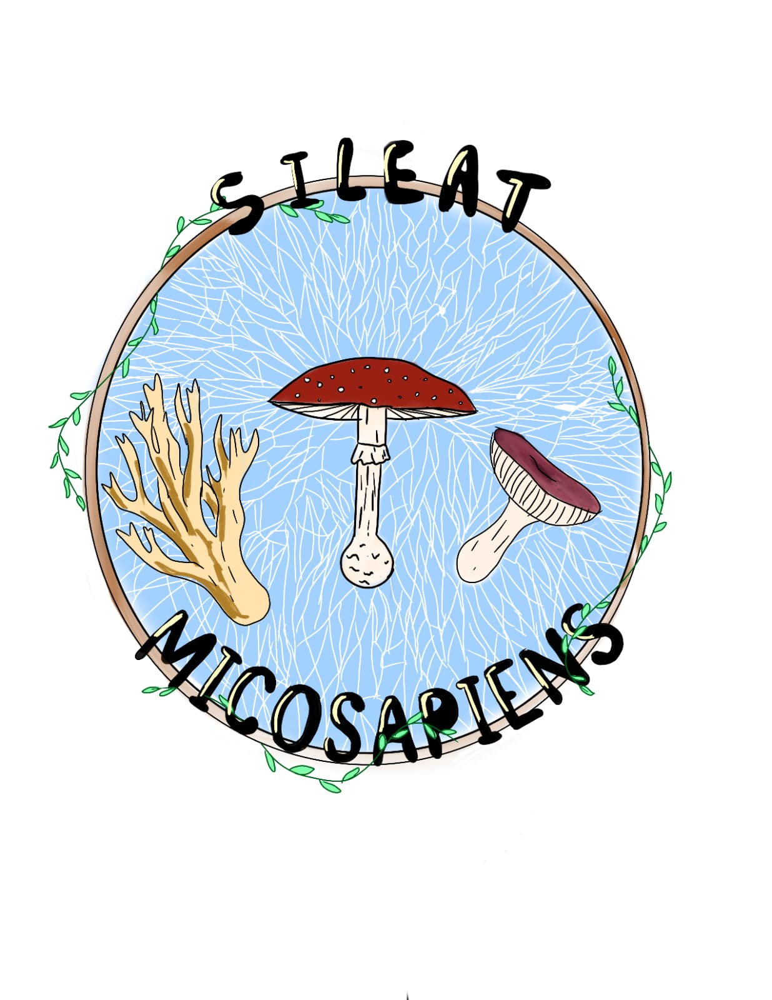

Auriscalpiaceae
La familia Auriscalpiaceae incluye hongos de formas hidnoides y coraloides sobre madera, como Artomyces pyxidatus. Son saprófitos del bosque de La Macarena.

La familia Auriscalpiaceae incluye hongos de formas hidnoides y coraloides sobre madera, como Artomyces pyxidatus. Son saprófitos del bosque de La Macarena.